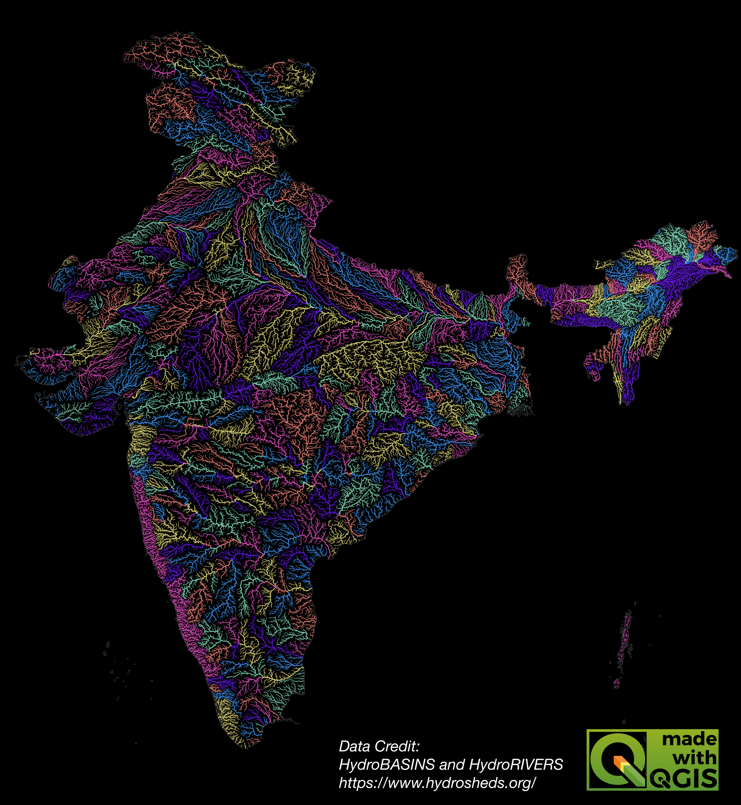
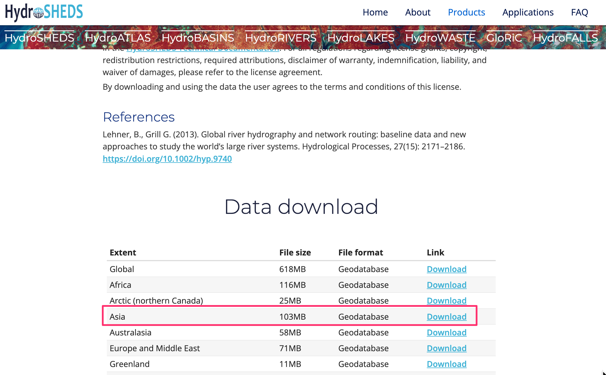
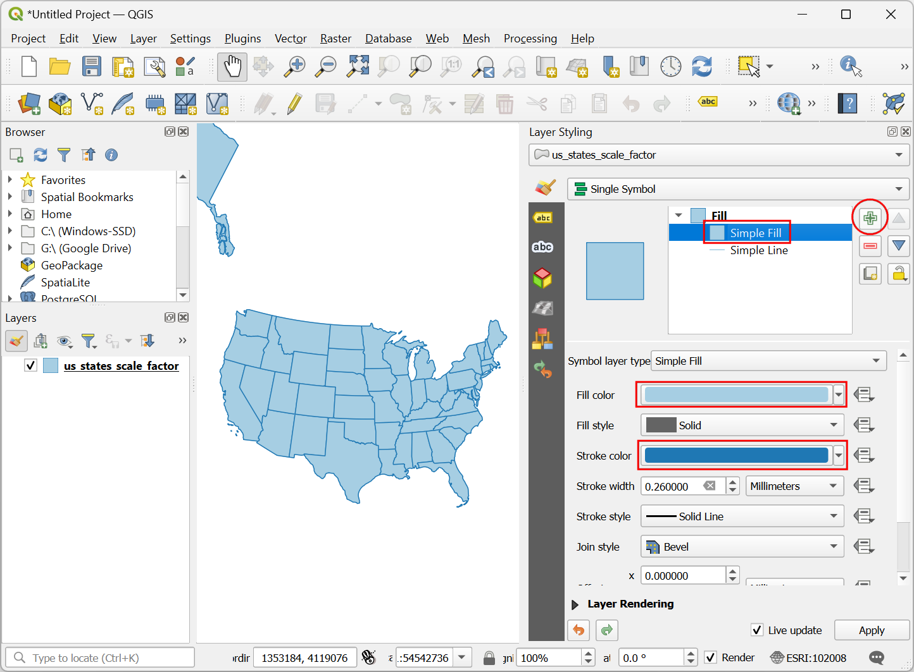
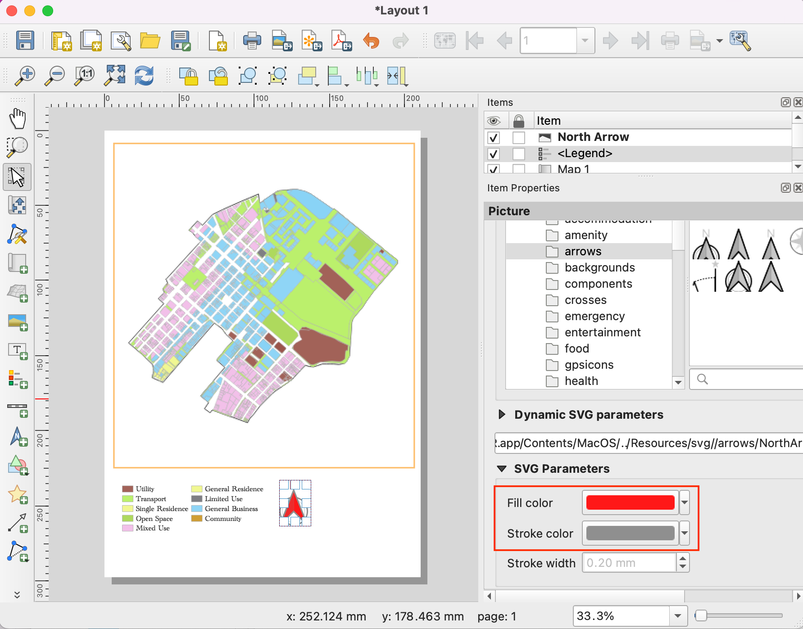
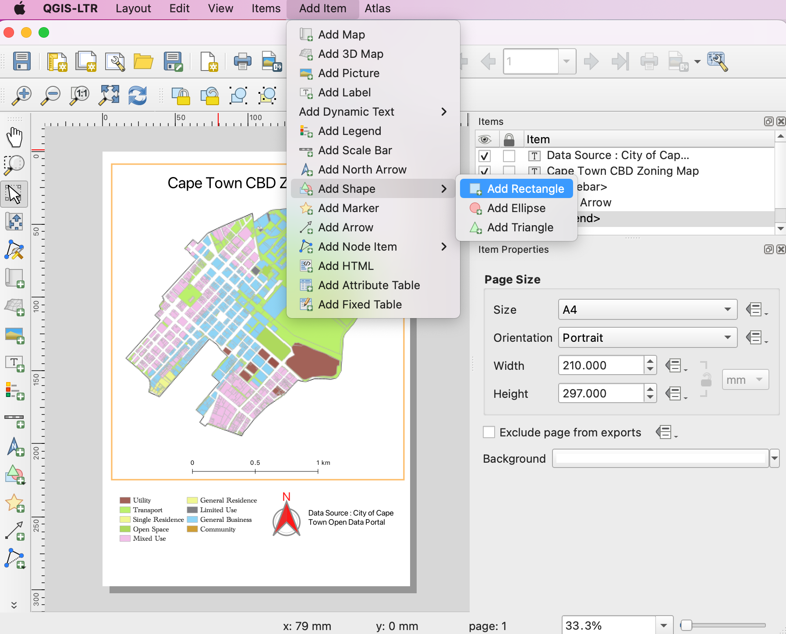
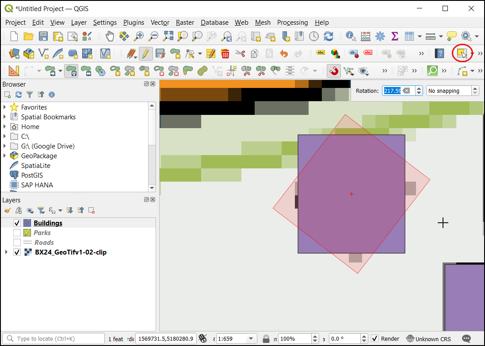

Erzeugen einer farbigen Karte für ein Einzugsgebiet (QGIS3)¶
In diesem Tutorial wird der Ablauf in QGIS behandelt, wie Fließgewässer-Karten für das eigene Land / die eigene Region unter Verwendung öffentlich verfügbarer hydrologischer Daten gestaltet werden können.
Bemerkung
Dieses Tutorial wurde von den schönen Karten des Projekts Grasshopper Geography inspiriert. Das Projekt kann durch Kauf seiner Karten im Online-Shop unterstützt werden.
Überblick über die Aufgabe¶
In diesem Tutorial werden Daten-Layer von einzugsgebieten und Flüssen des HydroSHEDS-Projekts verwendet, um eine Karte der Einzugsgebiete für indische Flüsse zu erzeugen.

Weitere Fähigkeiten, die wir erlernen:¶
Zuweisung einer Projektion zu einem Vektor-Layer mit falscher oder fehlender Projektion
Hinzufügen mehrerer Layer zu einem einzelnen GeoPackage
Hinzufügen eines Emblems ‚Made with QGIS‘ zu einer Karte
Beschaffung der Daten¶
HydroSHEDS bietet weltweit verfügbare Datensätze für regionale und globale Anwendungen an. Die Daten-Layer wurden aus hydrologisch aufbereiteten Digitalen Gelände-Modellen (DGM) der SRTM-Daten gewonnen.
Grenzen der Einzugsgebiete¶
HydroBasins bietet Polygongrenzen von Einzugsgebieten verschiedener Kontinente an. Die Grenzen sind hierarchisch organisiert – jedes Einzugsgebiet auf Ebene N ist unterteilt in kleinere Einzugegebiete auf Ebene N+1. In diesem Tutorial werden wir die Grenzen der Einzugsgebiete von Ebene 6 verwenden. Es steht jedem frei, eine andere Ebene für die eigene Region und die selbst erzeugten Karten zu benutzen. Dazu muss man die Website HydroBASINS aufrufen und die Zip-Datei der eigenen Region herunterladen.

Bemerkung
Die Einzugsgebietsgrenzen von HydroSHEDS wurden aus den SRTM-Daten gewonnen, die inzwischen mehr als 20 Jahre alt sind. Die Grenzen müssen nicht mehr mit den offiziellen Einzugsgebietsgrenzen der eigenen Region übereinstimmen. Es steht jedem frei. die Daten von HydroBasins durch die offiziellen Quellen zu ersetzen, sofern diese verfügbar sind.
Das Stromsystem¶
HydroRIVERS bietet ein Shapefile mit Linienobjekten an, welches das Stromsystem repräsentiert. Wir rufen die Website HydroRIVERS auf und laden die Zip-Datei für die betreffende Region herunter.

Administrative Grenze¶
Wir verschneiden die HydroSHEDS-Daten mit den Grenzen der ausgewählten Region. In diesem Tutorial wollen wir eine Karte der Einzugsgebiete von Indien erstellen, so dass wir ein Shapefile der Survey of India benötigen. Dazu rufen wir die Website Outline Maps of India auf und laden die Außengrenze Indiens (India International Boundary) im Vektor-Format herunter. Administrative Grenzen anderer Staaten können von den Websites GADM oder geoBoundaries bezogen werden.

Nach dem Herunterladen sollten die Dateien entpackt und in einem Ordner gespeichert werden. Es sollten nun 3 Shapefiles vorhanden sein: hybas_as_lev06_v1c.shp, HydroRIVERS_v10_as.shp und die administrativen Grenzen `polymap15m_area.shp`. (Anmerkung des Übersetzers: Am 04.04.2024 waren die administrativen Grenzen lediglich als PDF-Datei 1_16(2).pdf erhältlich. Für das Extrahieren der Grenzen als Vektor-Layer sind weitere fortgeschrittene Techniken erforderlich. Alternativ kann die Außengrenze Indiens auch bei GADM bezogen werden.)

Datenquellen: [HYDROSHEDS], [SOI]
Arbeitsablauf¶
Wir starten QGIS und suchen die heruntergeladenen Dateien im Browser. Per Drag & Drop können die Shapefiles
hybas_as_lev06_v1c.shpundHydroRIVERS_v10_as.shpin den Arbeitsbereich gezogen werden.

Dasselbe tun wir mit den uns verfügbaren Daten zu den Außengrenzen Indiens, z. B.
polymap15m_area.shp.

In den HydroSHEDS-Daten-Layern sind einige Objekte mit ungültigen Geometrien enthalten. Diese Fehler werden wir jetzt beheben. Dazu öffnen wir die Verarbeitungswerkzeuge über . Wir suchen dort nach und starten das Werkzeug durch Doppelklick.

Bemerkung
Um mehr Ursachen ungültiger Geometrien und deren Fehlerbehebung zu erfahren, ist das Tutorial Handling Invalid Geometries (QGIS3) hilfreich.
Wir wählen
hybas_as_lev06_v1cals Eingabelayer. Über den Button … rechts neben dem Eingabefeld Geometrien reparieren wählen wir Speichere in GeoPackage….

Wir navigieren zu einem geeigneten Verzeichnis für die Ausgabedaten und tragen als Dateiname
data.gpkgein. Wir Speichern die Datei. Die Aufforderung zur Eingabe eines Namens in Layername quittieren wir mit der Eingabe vonbasins_fixedund OK. Schließlich starten wir die Fehlerbehebung über den Button Starte, um den Ausgabe-Layer zu erzeugen.

Wir wiederholen diesen Schritt für den Layer
HydroRIVERS_v10_as. Dabei wählen wir dasselbe GeoPackagedata.gpkg, das soeben erzeugt wurde. Keine Sorge, wenn eine Meldung, die Datei würde überschrieben, angezeigt wird: QGIS wird nicht die Datei überschreiben, sondern dem GeoPackage einen neuen Layer hinzufügen. Diesmal verwenden wirrivers_fixedals Layername.

Der Layer
polymap15m_areawird mit einer Projektion ausgeliefert, die von QGIS nicht erkannt wird. Wir werden dies jetzt beheben. Dazu suchen wir nach dem Werkzeug und öffnen es mit einem Doppel-Klick. :Hinweis: Die GADM-Daten werden zwar automatisch in das Projekt projiziert, es empfiehlt sich jedoch, die folgenden Schritte auch an diesem Layer auszuführen.

Bemerkung
Es ist zu beachten, dass das Werkzeug Projektion zuweisen nicht den Layer reprojiziert, sondern einfach einem existierenden georeferenzierten Layer mit fehlender oder falscher Projektionsinformation eine korrekte solche hinzufügt. Um das KBS eines Layers zu ändern, muss das Werkzeug Layer reprojizieren verwendet werden.
Wir wählen
polymap15m_areaals Eingabelayer und betätigen den Button KBS wählen. Dort suchen wir die ProjektionEPSG:7755 - WGS 84 / India NSF LCCund wählen sie aus. Danach betätigen wir den Button … rechts neben dem Eingabefeld Zugewiesenes KBS und wählen Speichere in GeoPackage….

Wir wählen erneut das GeoPackage
data.gpkgund geben als Layernamenadmin_boundary_fixedein. Die Prozedur lassen wir mit Starte ausführen.

Nun haben wir 3 neue Layer,
basins_fixed,rivers_fixedundadmin_boundary_fixedim Layer-Panel von QGIS. Wir halten die Shift-Taste gedrückt und wählen die 3 anderen Layer per Mausklick aus. Mit Klick auf die rechte Maustaste können wir Layer löschen… wählen und die Rückfrage mit OK bestätigen.

Wir werden nun die Layer für die Einzugsgebiete und die Flüsse mit den administrativen Grenzen zuschneiden. Dazu suchen wir das Werkzeug aus den Verabreitungswerkzeugen und starten es durch einen Doppel-Klick.

Wir wählen
basins_fixedals Eingabelayer undadmin_boundary_fixedunter Layer überlagern. Über den Button … rechts neben dem Eingabefeld Zugeschnitten wählen wir Speichere in Geopackage…. Wir wählen erneut das GeoPackagedata.gpkgund als Layerbasins_clipped. Wir klicken auf Starte.

Sobald der Prozess beendet ist, wiederholen wir ihn mit
rivers_fixedals Eingabelayer. Das Ergebnis wird wiederum im GeoPackagedata.gpkgals Layerrivers_clippedgespeichert. Wir klicken erneut auf Starte.

Nun haben wir 2 neue Layer,
basins_clippedundrivers_clippedsowie den Layeradmin_boundary_fixedim Layer-Panel von QGIS. Wir halten die Shift-Taste gedrückt und wählen die anderen Layer per Mausklick aus. Mit Klick auf die rechte Maustaste können wir Layer löschen… wählen und die Rückfrage mit OK bestätigen.

Bevor wir fortfahren, sollten wir das Projekt speichern. In QGIS ist es möglich, das Projekt innerhalb eines GeoPackages zu speichern. Dies ist gut geeignet, die Verwaltung zusätzlicher Dateien zu vermeiden. Wir speichern also über .

Im Dialog In GeoPackage speichern benutzen wir den Button … rechts neben dem Eingabefeld Verbindung und suchen nach der bisher verwendeten Datei
data.gpkg. Wir gebenrivers_basin_mapals Namen unter Projekt ein und klicken OK.

Sobald die Daten gespeichert wurden, können wir den Eintrag
data.gpkgim Browser-Panel erweitern und sehen das QGIS-Projekt innerhalb des GeoPackages. Ggf. muss die Ansicht über den Button Aktualisieren neu geladen werden. Die Nutzer des GeoPackages können nun das Projekt direkt aus dieser Quelle heraus öffnen.

Um nun unsere kolorierte Karte zu erstellen, müssen die Einzugsgebiete so eingefärbt werden, dass benachbarte Gebiete nicht dieselbe Farbe bekommen. QGIS bietet genau dafür ein Werkzeug an. Wir suchen in den Verarbeitungswerkzeugen nach und öffnen das Werkzeug durch einen Doppel-Klick.

Wir wählen
basins_clippedals Eingabelayer und belassen alle anderen Einstellungen bei den Vorgaben. Die Ergebnisse werden erneut im GeoPackagedata.gpkggespeichert, und zwar als Layerbasins_with_color. Wir klicken auf Starte.

Nach Abschluss der Verarbeitung wird ein neuer Layer
basins_with_colorim Layer-Panel angezeigt. Mit einem Rechts-Klick öffnen wir das Kontextmenü und wählen Attributtabelle öffnen. Hier wurde eine neue Spaltecolor_idhinzugefügt, die einen Ganzzahl-Wert enthält; ggf. muss man nach rechts scrollen, um die Werte zu sehen. Indem wir jedem dieser Werte eine eigene Farbe zuweisen, färben wir die Objekte topologisch ein.

Nun wollen wir die Farb-ID des Einzugsgebietes auf alle darin enthaltenen Flüsse übertragen. Dazu benutzen wir das Werkzeug aus dem Panel der Verarbeitungswerkzeuge; wir starten es durch Doppel-Klick.

Wir wählen die Layer
rivers_clippedals Mit Objekten verknüpfen in undbasins_with_colorals Durch Vergleich mit. Im Bereich Hinzuzufügende Felder klicken wir auf den Button … und wählen das Feldcolor_id. Das Ergebnis speichern wir im GeoPackagedata.gpkgals Layerrivers_with_color. Wir klicken auf Starte.

Nach Abschluss der Verarbeitung wird ein neuer Layer
rivers_with_colorim Layer-Panel angezeigt. Es ist nun Zeit, die Symbologie anzuwenden. Wir wählen den Layeradmin_boundary_fixedklicken auf den Button Layergestaltungsfenster öffnen im Layer-Panel. Wir ändern die Farbe zu schwarz.

Als nächstes wählen wir den Layer
rivers_with_colorund wählen in der LayergestaltungKategorisiertstattEinzelsymbol.

Wir wählen
color_idals Wert und klicken auf Klassifizieren. Den Flüssen in unterschiedlichen Einzugsgebieten werden nun unterschiedliche Farben zugeordnet.

Bemerkung
Wenn die zufällige Farbzuordnung nicht zufriedenstellend sein sollte, können wir durch Doppelklick auf das Symbol eigene Farben für jeden Wert zuordnen.
Die vorgeschlagenen Linien sind für unsere Karte zu dick. Wir sollten das ändern, indem wir die Shift-Taste gedrückt halten und alle Symbole in der Liste auswählen. key and select all the symbols in the list. Wir klicken auf die Auswahlliste Symbol und wählen Symbol einstellen….

Wir wählen Einfache Linie aus und ändern die Breite aus
0.1. Die Karte sollte jetzt viel besser aussehen.

Wir können die Karte weiter verbessern, indem wir abhängig von ihrer Größe die Flüsse mit unterschiedlichen Strichbreiten darstellen. Im Layer
rivers_with_colorgibt es ein FeldORD_STRA, welches Werte für die Flussordnungszahl nach Strahler enthält: je größer die Zahl, desto größer der Fluss. Wir werden den Assistenten benutzen, um der Flussordnungszahl eine angemessene Strichbreite zuzuordnen. Wir klicken in den Symboleinstellungen auf den Button Datendefinierte Übersteuerung neben der Einheiten-Liste von Breite und wählen Assistent….

Im Bereich Eingabe wählen wir das Feld
ORD_STRAals Quelle mit1als Werte von und6als bis. Unter Ausgabe wählen wir0.05als Größe von und0.2als bis. Die Karte wird dynamisch aktualisiert, sobald Werte einegegeben werden. In den Karten zur eigenen Region können diese Werte gern angepasst werden. Sobald die Darstellung zufriedenstellend erscheint, benutzen wir den Zurück-Button.

Es ist zu beachten, dass der Button Datendefinierte Übersteuerung nun gelb dargestellt wird. Das signalisiert eine aktive Übersteuerung zu dieser Einstellung.

Unsere gefärbte Karte der Einzugsgebiete ist nun fertig. Wir sollten diese Karte jetzt in ein Layout einfügen, um eine hochaufgelöste Version mit weiteren Karteelementen zu exportieren. Wer gehen zu . Wenn wir aufgefordert werden, einen Namen einzugeben, lassen wir diesen leer und klicken OK.

Im Dialogfenster Layout 1 klicken wir mit der rechten Maustaste in den leeren Arbeitsbereich und wählen Seiteneigenschaften….

Wir wählen als Größe```A4` und schwarz als Farbe für den Hintergrund.

Wir wählen .

Mit gedrückter linker Maustaste wählen wir eine Region auf dem Arbeitsbereich, in der die Karte gedruckt werden soll.

Sobald die Karte angezeigt wird, scrollen wir im Bereich Elementeigenschaften nach unten und entfernen den Haken bei Hintergrund.
Bemerkung
Sollte der Bereich Elementeigenschaften nicht sichtbar oder zufällig geschlossen worden sein, können wir ihn im Menü über wieder sichtbar machen.
Dort sollten wir noch die Ausdehnung der Karte anpassen. Dazu klicken wir auf den Button Kartenausdehnung interaktiv bearbeiten und benutzen die Maus, um die Karte zu verschieben. Außerdem kann das Scroll-Rad der Maus benutzt werden, um die Vergrößerung anzupassen. Für eine genauere Steuerung der Vergrößerung müssen die Werte im Bereich Ausdehnung manuell angepasst werden. Wir wiederholen die Schritte so lange, bis die Darstellung zufriedenstellend ist.

Als nächstes werden wir das QGIS-Logo zur Karte hinzufügen. Wir wählen .

Wir spannen mit der Maus ein Rechteck auf der Arbeitsfläche auf, in dem das Bild platziert werden soll. Im Dielog für die Elementeigenschaften dialog suchen wir im SVG-Browser nach der Icon-Gruppe Anw.-symbole -> logos und wählen das Logo
Made with QGIS.

Als nächstes werden wir eine Beschriftung mit den Daten-Referenzen einfügen. Wir wählen und geben den Text für die Daten-Referenzen ein. Schriftart und Ausrichtung des Textes können wir anpassen.

Sobald die Anpassungen vorgenommen sind, wählen wir . Wir navigieren zu einem Ordner im Dateisystem, in dem wir das PNG-Bild ablegen wollen und geben den Namen
river_basins.pngein.

Wir wählen
300 dpials Export-Auflösung und dann Speichern.

Nach Abschluss des Exports ist die finale Version der Karte am gewählten Ort verfügbar.

Das PNG-Bild haben wir mit QGIS und frei verfügbaren Daten erzeugt.

If you want to give feedback or share your experience with this tutorial, please comment below. (requires GitHub account)